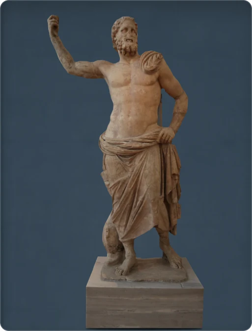

Poseidon

An arm raised
The raised right hand probably held a trident. A dolphin beside the leg supports the statue. Found on Melos in 1877, this Greek Hellenistic Poseidon is carved in Parian marble, with a cloak covering his hips.
Greece · Hellenistic period · 125–100 BCE · Parian marble · height 2.35 m · National Archaeological Museum, Athens, inv. 235
Source: National Archaeological Museum ↗
About the gallery
Following the raised right arm
Start at the shoulder and follow the arm to the raised hand. The gesture extends the figure’s outline beyond the torso and draws the eye to the space around the hand. The entry suggests that the hand probably held a trident. To explore that reading, look first at the arm’s position, then imagine how an object would change the outline of the figure. The gesture can be seen in the marble. The trident remains a possible explanation for the pose.
Finding the dolphin beside the leg
The raised arm catches the eye, but the lower part of the statue rewards a second look. Follow the body down to the dolphin beside the leg. The dolphin supports the figure and draws the eye to the statue’s base. Compare the space around the hand with the space between the leg and the dolphin. The difference draws attention to the contrast between an outward gesture and a support that stays close to the body.
Tracing the folds of the cloak
The cloak covers the hips and marks the transition between the torso and the legs. Look at the folds that cross the hips before turning downwards. Compare those lines with the smoother surface of the torso. The same Parian marble represents both flesh and fabric here. The shapes of the carved surfaces let you move between the two as you look. Following the folds downwards also offers another route through the photograph, leading back to the leg and the dolphin below.
Using the dates and dimensions
The date range of 125–100 BCE places the statue in the Hellenistic period. The year 1877 refers to its discovery on Melos. The entry also records a height of 2.35 metres and gives the National Archaeological Museum in Athens as the place where it is kept. These details help put the photograph in context. The height gives you a sense of scale as you look at the raised arm, and the two place names distinguish where the sculpture was found from where it is kept.